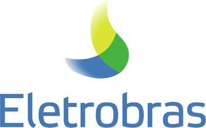
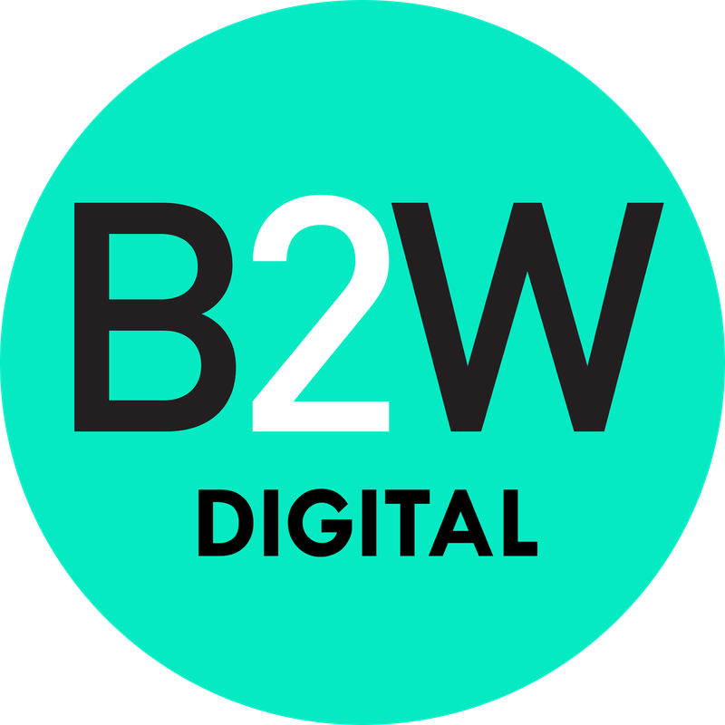
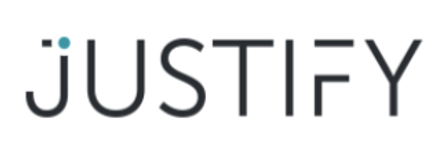
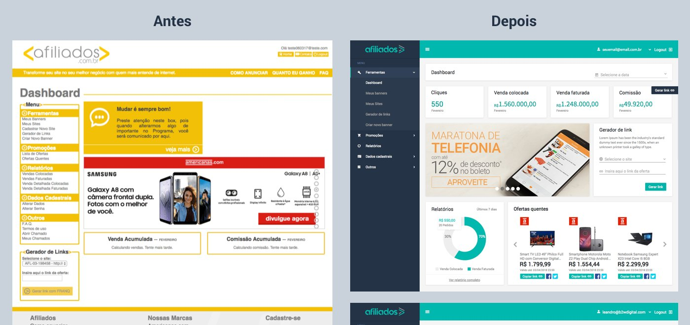

Uma trajetória que começou no código, passou pelo design, chegou a produto, negócio e inovação, e hoje usa a inteligência artificial para criar soluções e validar negócios mais rápido.
Antes dos projetos, a base: formação, forma de pensar e os resultados que ela gerou.
PRODUTO · UX · IA
01 · Sobre mim
Um coração de design com mentalidade de negócio.
Graduado em Sistemas de Informação e pós-graduado em Design Estratégico e Experiência do Usuário. Há mais de 17 anos crio produtos e jornadas de usuário integrando tecnologia, design e estratégia de negócio, com passagens por B2W, GetNinjas e Eletrobras.
Fui Gerente de Produto e Inovação na ANPEI, com foco em iniciativas de inteligência artificial e inovação. Hoje uso a visão de negócio e a IA para tirar ideias do papel: crio soluções que validam produtos e geram valor para usuários e clientes.
Designer de interface e dev front-end: entender como os produtos são construídos.
Pessoas
Design & UX
Pesquisa, usabilidade e design system: ouvir o usuário e transformar isso em experiência.
Valor
Produto & negócio
Estratégia, métricas e foco em geração de valor e receita sustentável.
Ecossistema
Inovação
Inovação aberta, startups e grandes empresas: POCs que viram projetos de escala.
Negócio + IA
Produto com IA
A visão de negócio guia a IA: soluções criadas e validadas rápido, com foco no valor para o cliente.
“A base em UX desenvolveu minha capacidade de síntese, storytelling e comunicação: transformar contextos complexos em narrativas claras e tangíveis.”
01 · Especialidades
O que eu faço bem.
Design & UX
Estratégia de UX
Design thinking para achar dores e oportunidades
UI e UX Design
Testes de usabilidade e pesquisa com usuários
Evolução da jornada (UX/CX)
Storytelling em apresentações e relatórios
Produto
Gestão end-to-end: discovery → delivery → escala
Estratégia de produto e novos negócios
Decisão orientada a dados e métricas
Gestão de times e fornecedores
Inovação
Inovação aberta e conexão com ecossistemas
Projetos de P&D
MVPs, POCs e implementação em escala
Inteligência artificial aplicada
Gestão & liderança
Gestão de portfólio de produtos
Planejamento anual, roadmap e metas
Orçamento, forecast e performance
Criação e escala de novos produtos
Report direto à diretoria
Gestão de contrato de R$ 6 milhões (Sebrae e ANPEI)
01 · Resultados
Impacto medido em números.
Escolha um tema e deslize para ver todos:
R$6MM
contrato do Sebrae com a ANPEI sob a minha gestão, para conectar startups e grandes corporações
Contexto
Contrato do Sebrae com a ANPEI para aproximar startups das dores de grandes corporações. Eu fiz a gestão do contrato e das entregas.
+R$27MM
em valor gerado em inovação
Contexto
Valor gerado por iniciativas do portfólio de produtos da ANPEI, como a Olimpíada de Inovação, realizada dentro de empresas como Natura, Grupo Boticário, Indovinya e Eletrobras, entre outras.
+1.100
conexões estratégicas geradas
Contexto
Conexões entre empresas, startups e instituições geradas nos eventos da ANPEI: Rotas Inovadoras, Comitês Temáticos e Fóruns de Inovação.
+450
profissionais formados em certificações com projetos aplicados em inovação
Contexto
Profissionais formados nas certificações ANPEI Architect, todas com projeto aplicado avaliado por banca.
+19
eventos de inovação de médio e grande porte para o ecossistema brasileiro: curadoria de temas, palestrantes, agenda, produção e facilitação
Contexto
Eventos da ANPEI: Rotas Inovadoras, Comitês Temáticos (Deep Tech, bioeconomia e outros temas), Fóruns de Inovação e um grande evento anual.
50%
de conversão de POCs em projetos de escala
Contexto
Das POCs do PowerUp, metade foi recomendada para escala pelas áreas de negócio da Eletrobras, com orçamento direcionado ao rollout. Isso veio do processo: POCs nascidas de dores reais das áreas, contratação mais rápida com suprimentos e cibersegurança e jurídico alinhados desde o início.

25
iniciativas de inovação aberta com soluções contratadas em 9 meses
Contexto
Startups contratadas pelo PowerUp para resolver dores das áreas de negócio, do scouting à prova de conceito.
5
polos de inovação estruturados
Contexto
Polos de inovação estruturados fora do eixo Sul-Sudeste, com hubs e startups locais conectados às dores da Eletrobras.
1,3 → 4,6
nota média nas lojas de aplicativos, em todos os produtos
Contexto
Nos apps de mídia para operadoras, como Oi Jornais, Vivo News e TIM Banca Virtual. A nota subiu com melhorias guiadas pelos comentários e feedbacks das lojas, evoluindo o produto a cada versão.
Redesign do painel do Afiliados.com, a plataforma de afiliados da B2W: de uma interface carregada para um painel claro e orientado a dados, com antes e depois no Behance.

−30%
chamados no Zendesk
Contexto
Nos apps de operadora (Oi, Vivo News, TIM Banca Virtual). Melhoramos a experiência a partir dos comentários das lojas e das pesquisas de NPS, e comparamos um mês com o seguinte ao longo de 2 meses.
Como
Pesquisa com usuários e design thinking para enxergar as dores reais antes de desenhar.
Milhões
de usuários no app do GetNinjas, o marketplace de serviços
Milhões
de usuários nos apps de mídia das operadoras, como o TIM Banca Virtual
+155%
de aumento na taxa de ativação: a maior da história da empresa, em 2022
4,5x
mais recorrência para usuários com 1º pedido no app
Contexto
Decidimos priorizar o app do cliente. A hipótese: no site, o cliente só lembrava do GetNinjas quando tinha um problema; no app, com notificações, a marca ficaria presente para a próxima necessidade. Em cerca de 3 meses após as primeiras versões, quem fez o 1º pedido pelo app voltou 4,5 vezes mais.
+22%
de downloads do app
+18%
de engajamento nos apps
+29%
de aquisição de usuários
Como
Decisões de produto guiadas por métricas de ativação, recorrência e aquisição.
3 meses → 20 dias
para colocar um novo app no ar, depois do Design System
Contexto
Antes, a Bennu levava cerca de 3 meses para desenvolver um app. Com a interface no Figma e uma biblioteca de componentes codados, o prazo caiu para cerca de 20 dias.
Como
Treinei desenvolvedores e designers para criar os componentes codados, com design tokens, componentes reaproveitáveis no Figma e temas para adaptar o mesmo sistema aos apps de cada operadora.
24%
do GMV da Black Friday veio do canal de afiliados: o maior canal
10 mil
casos em 5 meses, a partir de um MVP feito em 2 dias
+180 mil
casos, 2ª rodada de investimento e exit com empresa lucrativa
5% → 15%
take rate, de 2022 para 2023

7
de ROI sobre o investimento em aquisição (2023)
02
Trajetória
Do varejo digital às startups, da energia à inovação, e agora a IA aplicada a negócios: cada etapa acrescentou uma camada.
02 · Linha do tempo
Experiência profissional.
ToquePasse o mouse ou clique num ano para ver a história, os resultados e o case daquela fase.
2011
B2W Digital
Designer de interface, dev front-end, UX designer e UX lead
Onde aprendi a ouvir o usuário e a transformar isso em produto.

B2W Digital · UI e UX Design · Produto
Afiliados.com
Redesign do painel do programa de afiliados: de uma interface carregada para um dashboard claro e orientado a dados, com versão mobile e biblioteca de componentes.
Do outro lado da mesa: empreender, validar rápido e escalar com números.
Acordo Fechado · Sócio · 2016–2019
Um MVP de 2 dias que continua crescendo.
Mediação e conciliação online: validamos o modelo antes de escrever o sistema.
2 diaspara o MVP ir ao ar
+180 milcasos e exit lucrativo
+700 milcasos hoje
GetNinjas · Gerente de produto mobile · 2021–2022
A maior taxa de ativação da história da empresa.
Um pacote de moedas grátis, com o Banco PAN, para o profissional ver valor antes de pagar.
+155%de ativação
+11%de receita
+18%em reformas
GetNinjas · Gerente de produto mobile · 2021–2022
+22% de downloads com a mensagem certa, na hora certa.
A tela que o cliente vê logo depois de pedir um serviço, reescrita para levá-lo ao app.
+22%de downloads
2 semanasde experimento
Copye momento
Justify · Sócio e head de produto · 2022–2024
Acesso à Justiça em 90% menos tempo.
Marketplace que conectava consumidores a advogados, e o que aprendi com o fim dele.
5% → 15%take rate
7de ROI em aquisição
14,43%de conversão
Eletrobras · PowerUp · 2024
Startups resolvendo dores reais de uma gigante de energia.
Inovação aberta do scouting à escala, com contratação pensada para startup.
25soluções em POC
50%foram para escala
5polos de inovação
05
Educação & treinamentos
Do palco à coordenação: estruturar programas e ensinar o que aprendi na prática.
05 · Programas que coordenei
ANPEI Architect
Quatro certificações executivas em inovação, com cases de executivos das empresas mais inovadoras do Brasil e um projeto aplicado avaliado por banca. Idealizadas pelo Diretor de Mercado da ANPEI; coordenei e evoluí os programas: curadoria de facilitadores, jornada do aluno e novos frameworks.
Sou um profissional de negócio que usa a inteligência artificial para criar soluções, validar produtos e gerar valor para usuários e clientes.
$ victor --momento
✓ produto + design + regras de negócio
✓ IA para validar hipóteses rápido
✓ validação com usuários reais
▍estudando: agentes de IA e organização do conhecimento
06 · Produto com IA
Da ideia à solução validada, sem esperar meses.
Por anos, eu desenhava as telas, definia as regras de negócio e acompanhava o time de desenvolvimento. A IA mudou essa relação: quem entende o problema e o negócio agora consegue tirar a solução do papel e colocá-la na frente do cliente. A IA acelera a construção; a visão de negócio decide o que construir, como medir e se vale escalar.
Antes
Desenhar a experiência, escrever as regras de negócio, pedir ao desenvolvimento e acompanhar a entrega.
→
Agora
Definir o problema e as regras, criar a solução com a IA e validar com usuários reais antes de investir pesado.
Onde estou focando
Agentes de IA
Soluções que executam tarefas e automatizam processos de ponta a ponta para o usuário.
Arquitetura e infra
Entender arquitetura, servidores e deploy o suficiente para decidir bem: como a solução roda, quanto custa e se escala.
Validação de produto
Testar hipóteses com usuários reais antes de investir pesado: MVPs, POCs e métricas que dizem se vale escalar.
IA na educação
Minha pesquisa de mestrado: como a IA pode ampliar o acesso à informação e apoiar a jornada de quem estuda.
O critério continua o mesmo de sempre: gerar valor real para o usuário.
06 · Projetos com IA
O que já construí neste caminho.
2026 · Projeto de mestrado · Produto end-to-end · IA aplicada
SIPC: plataforma de estudos com IA
Transforma o programa de qualquer prova num plano de estudo diário e vai direto ao essencial: o aluno abre a plataforma e sabe, sem pensar, o que estudar agora.